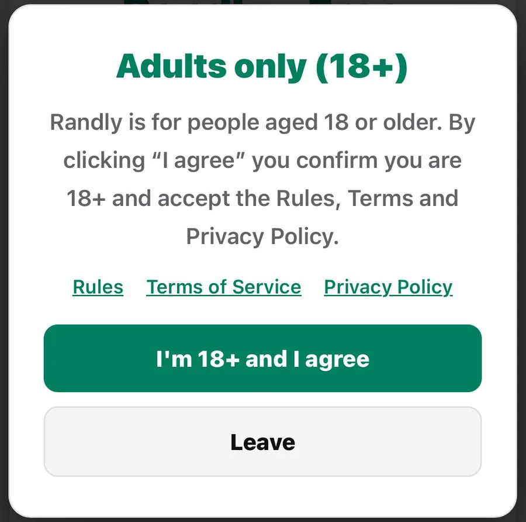
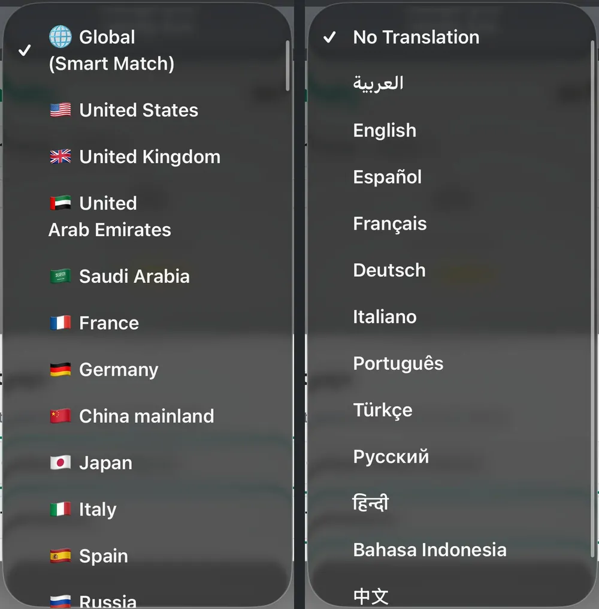

आख़िरी अपडेट: अक्टूबर 2026
Ome.tv रैंडम वीडियो चैट के सबसे जाने-माने नामों में से एक है, और Randly एक नया मुफ़्त विकल्प है। अगर आप इन दोनों में से चुनने की सोच रहे हैं, तो यह तुलना सबसे ज़रूरी बातें बताती है: एक्सेस, फ़ीचर, सुरक्षा और मोबाइल पर इस्तेमाल।
हमने दोनों साइटें खुद आज़माईं और जो पाया, उसे लिख लिया। नीचे Ome.tv के बारे में हम जो कुछ भी कहते हैं, वह हमारी अपनी टेस्टिंग पर आधारित है, इसलिए अगर साइट बाद में कुछ बदलती है, तो ब्योरे भी बदल सकते हैं। आइए, कदम-दर-कदम देखें कि दोनों की तुलना कैसी है।
हमने दोनों साइटों को वैसे ही देखा जैसे कोई आम नया यूज़र देखता है। हमने सीधे-सादे सवाल पूछे:
रैंडम चैट साइट चुनने से पहले ज़्यादातर लोगों के मन में यही सवाल होते हैं, इसलिए हमने इन्हीं के आधार पर नीचे की तुलना बनाई है।
| फ़ीचर | Randly | Ome.tv |
|---|---|---|
| कीमत | मुफ़्त, कोई पेड प्लान नहीं, सभी फ़ीचर शामिल | बेसिक चैट मुफ़्त; फ़िल्टर और ट्रांसलेशन पेड हैं (हमारी टेस्टिंग में) |
| रजिस्ट्रेशन ज़रूरी | नहीं | हाँ, ऐप इंस्टॉल करने पर भी (हमारी टेस्टिंग में) |
| देश का चयन | हाँ, मुफ़्त | पेड (हमारी टेस्टिंग में) |
| मैसेज का लाइव ट्रांसलेशन | हाँ, मुफ़्त, 12 भाषाएँ | पेड (हमारी टेस्टिंग में) |
| वीडियो चैट | हाँ | हाँ |
| टेक्स्ट चैट | हाँ | नहीं, सिर्फ़ वीडियो (हमारी टेस्टिंग में) |
| रुचि के आधार पर मैचिंग | हाँ | नहीं (हमारी टेस्टिंग में) |
| ब्राउज़र में चलती है | हाँ, ऐप की ज़रूरत नहीं | हाँ, साथ में ऐप भी है (दोनों में रजिस्ट्रेशन ज़रूरी था) |
| रिपोर्ट और बैन | हाँ | हाँ |
| एंट्री पर उम्र की पुष्टि | हाँ, पहली स्क्रीन पर 18+ का प्रॉम्प्ट | हमारी टेस्टिंग में कुछ नहीं दिखा |
Randly में एक बिल्ट-इन XO मिनी-गेम भी है, और यह सब मुफ़्त है।
Randly के लिए अकाउंट की ज़रूरत नहीं है। आप साइट खोलते हैं, वीडियो या टेक्स्ट चुनते हैं और Start दबाते हैं। हमारी टेस्टिंग में Ome.tv ने चैट से पहले हमसे रजिस्टर करवाया, और यह उनका ऐप डाउनलोड करने के बाद भी लागू था। Randly पर आप गेस्ट के तौर पर स्ट्रीम और चैट कर सकते हैं, बिना किसी अकाउंट के।
यह बात सुनने से ज़्यादा मायने रखती है। रजिस्ट्रेशन का मतलब है यूज़रनेम चुनना, जानकारी भरना और इंतज़ार करना, और कई लोग इसी मोड़ पर टैब बंद कर देते हैं। अगर आप पाँच मिनट के लिए रैंडम चैट आज़माना चाहते हैं, तो ऐसी साइट कहीं बेहतर है जो तुरंत शुरू करने दे।
कीमत की बात करें तो Randly में कोई पेड प्लान है ही नहीं। हर फ़ीचर सबके लिए उपलब्ध है। हमारी टेस्टिंग में Ome.tv की बेसिक चैट मुफ़्त थी, लेकिन फ़िल्टर और ट्रांसलेशन पेड फ़ीचर थे।
Randly आपको किसी से भी मिलने के लिए ग्लोबल मोड देता है, या किसी ख़ास जगह के लोगों से बात करने के लिए कंट्री फ़िल्टर। आप अपनी रुचियाँ भी जोड़ सकते हैं ताकि वही रुचियाँ रखने वाले लोगों से आपकी मैचिंग हो, जो हमें Ome.tv पर नहीं मिला।
यह सबसे बड़े अंतरों में से एक है। मान लीजिए आप मिस्र (Egypt) से हैं और तुर्की (Turkey) के किसी व्यक्ति से बात करना चाहते हैं: Randly पर देश चुनना मुफ़्त है। हमारी टेस्टिंग में Ome.tv ने कंट्री फ़िल्टरिंग के लिए पैसे लिए।
रुचि के आधार पर मैचिंग से चैट का अहसास भी बदल जाता है। जब आपकी मैचिंग ऐसे व्यक्ति से होती है जिसे वही गेम, संगीत या विषय पसंद हैं, तो आपको शून्य से बातचीत गढ़नी नहीं पड़ती। बात करने के लिए पहले से कुछ मौजूद होता है।
Randly वीडियो चैट और टेक्स्ट चैट, दोनों देता है। हमारी टेस्टिंग में Ome.tv सिर्फ़ वीडियो था, उसमें टेक्स्ट चैट का विकल्प नहीं था।
दोनों विकल्प होना व्यवहार में काम आता है। कभी-कभी आप ऐसी जगह होते हैं जहाँ कैमरा या माइक्रोफ़ोन इस्तेमाल नहीं कर सकते, या आप बस टाइप करना पसंद करते हैं, खासकर जब आप कोई भाषा सीख रहे हों। टेक्स्ट चैट होने से ऐसे पलों में भी आप साइट इस्तेमाल कर सकते हैं।
अगर आप अलग-अलग भाषाओं में चैट करना चाहते हैं, तो Randly टेक्स्ट चैट के लिए 12 भाषाओं में वैकल्पिक लाइव ट्रांसलेशन देता है। Randly पर मिस्र का यूज़र तुर्की के यूज़र से चैट कर सकता है और बिना किसी शुल्क के बातचीत अरबी में पढ़ सकता है। हमारी टेस्टिंग में Ome.tv ने ट्रांसलेशन को पेड प्लान के पीछे रखा था।
जो लोग भाषा का अभ्यास करने या दूसरी संस्कृतियों के लोगों से मिलने के लिए रैंडम चैट इस्तेमाल करते हैं, उनके लिए यह अंतर बड़ा है। मुफ़्त ट्रांसलेशन सिर्फ़ एक “हैलो” को ऐसी बातचीत में बदल देता है जिसे आप सच में समझ सकते हैं।
Randly सीधे आपके फ़ोन के ब्राउज़र में चलती है, ऐप की ज़रूरत नहीं। आप लिंक खोलते हैं और अंदर पहुँच जाते हैं। Ome.tv ब्राउज़र में चलती है और उसका ऐप भी है, और हमारी टेस्टिंग में दोनों विकल्पों में रजिस्ट्रेशन ज़रूरी था।
अगर आप ज़्यादातर फ़ोन से चैट करते हैं, तो सबसे आसान तरीका वही है जिसमें पहले कुछ इंस्टॉल करने या अकाउंट बनाने को न कहा जाए।
दोनों साइटें रिपोर्टिंग और बैनिंग देती हैं। Randly में तुरंत रिपोर्ट करने का विकल्प है और जिन यूज़र को कई रिपोर्ट मिलती हैं, उन्हें सीमित समय के लिए अपने-आप बैन कर दिया जाता है। Randly आपकी बातचीत को स्टोर भी नहीं करती, और पहली स्क्रीन पर एंट्री से पहले आपसे पुष्टि करवाई जाती है कि आप 18 साल या उससे ज़्यादा के हैं। 18 साल से कम उम्र के लोगों को अनुमति नहीं है। हमारी टेस्टिंग में Ome.tv ने हमारे एंटर करते समय उम्र की कोई सूचना नहीं दिखाई।
आप कोई भी साइट चुनें, नियम वही रहते हैं: निजी जानकारी कभी साझा न करें, जो भी आपको असहज करे उसे स्किप कर दें, और याद रखें कि आपकी उम्र 18 साल या उससे ज़्यादा होनी चाहिए।

दोनों आज़माते समय अंतर ऐसा महसूस हुआ। Ome.tv पर शुरू करने से पहले हमें रजिस्टर करना पड़ा, वेबसाइट पर और फिर ऐप में भी। Randly पर हमने अपनी उम्र की पुष्टि की और गेस्ट के तौर पर तुरंत चैट शुरू कर दी। फिर जब हम किसी ख़ास देश के व्यक्ति से बात करना चाहते थे, तो Randly ने हमें देश मुफ़्त में चुनने दिया, जबकि Ome.tv ने भुगतान माँगा। लाइव ट्रांसलेशन भी इसी तरह रहा: Randly पर मुफ़्त, Ome.tv पर पेड।

सबसे अच्छा विकल्प इस पर निर्भर करता है कि आप रैंडम चैट से क्या चाहते हैं। इसे समझने का एक आसान तरीका यह है:
कुछ आदतें किसी भी रैंडम चैट साइट पर अनुभव बेहतर बनाती हैं:
आप कोई भी साइट इस्तेमाल करें, कुछ आदतें आपको ज़्यादा सुरक्षित रखती हैं:
Ome.tv एक जाना-माना नाम है जिसके यूज़र बहुत हैं, इसलिए कुछ लोग बस जाने-पहचाने विकल्प को पसंद करते हैं। लेकिन अगर रजिस्ट्रेशन और पेड फ़िल्टर आपको परेशान करते हैं, तो Randly ज़्यादा आसान विकल्प है।
हाँ, वीडियो और टेक्स्ट चैट मुफ़्त हैं, कोई छिपी फ़ीस नहीं है। कोई पेड प्लान नहीं है।
नहीं। आप गेस्ट के तौर पर तुरंत चैट शुरू कर सकते हैं।
हमारी टेस्टिंग में, हाँ। इसे इस्तेमाल करने के लिए हमें रजिस्टर करना पड़ा, ऐप इंस्टॉल करने के बाद भी।
हाँ, यह मोबाइल ब्राउज़र में चलती है, ऐप डाउनलोड करने की ज़रूरत नहीं।
हाँ। Randly पर देश का चयन और लाइव ट्रांसलेशन, दोनों मुफ़्त हैं। हमारी टेस्टिंग में Ome.tv ने दोनों के लिए पैसे लिए।
हाँ। Randly में वीडियो चैट और टेक्स्ट चैट, दोनों हैं। हमारी टेस्टिंग में Ome.tv सिर्फ़ वीडियो देता था।
हाँ। Randly सिर्फ़ 18+ के लिए है, और पहली स्क्रीन पर एंट्री से पहले आपसे उम्र की पुष्टि करवाई जाती है।
हाँ। हमारी सबसे अच्छे Omegle विकल्पों की गाइड देखें।
दोनों साइटें आपको वीडियो पर अजनबियों से मिलवाती हैं, और दोनों रिपोर्टिंग और बैनिंग देती हैं। अंतर एक्सेस और लागत पर आकर टिकते हैं। हमारी टेस्टिंग में Ome.tv ने रजिस्ट्रेशन ज़रूरी रखा, कंट्री फ़िल्टर और ट्रांसलेशन के लिए पैसे लिए, और सिर्फ़ वीडियो दिया। Randly को अकाउंट की ज़रूरत नहीं, इसमें वीडियो और टेक्स्ट चैट, रुचि के आधार पर मैचिंग, मुफ़्त देश चयन और 12 भाषाओं में मुफ़्त ट्रांसलेशन शामिल हैं, और कोई पेड प्लान नहीं है।
अगर आप कंट्री फ़िल्टर और ट्रांसलेशन के साथ मुफ़्त, बिना रजिस्ट्रेशन वाला अनुभव चाहते हैं, तो Randly आज़माकर देखें।